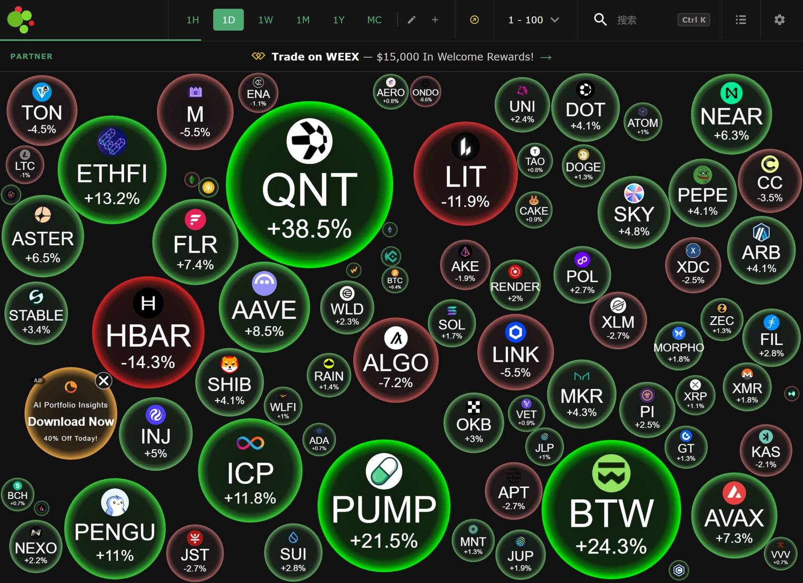

2026-09-30（周三 · A股节前最后交易日）· A股/港股/日经/韩股已开盘（盘中 10:15 前后快照）· 美股/欧股 9月29日（周二）收盘 · 加密市场 当日 10:05 实时（7×24）· 今日焦点：9月中国PMI 50.1重返扩张 + 威廉姆斯鸽派讲话令10月加息概率一夜降至约50% + WTI -3.95%失守$90（SPR释放4000万桶）+ 现货金+1.64%修复反弹 + OpenAI DevDay发布全天候智能体Dots与GPT-6.1 Sol + 财政部购房贴息今起实施（地产链利好兑现回落）+ 今夜20:30 PCE/ADP/GDP终值、美光盘后财报
❝
任何事情都可能发生。你不需要知道市场下一步会做什么才能赚钱——因为没有任何单一样本的结果能决定你的成败。真正成熟的交易者用概率的方式思考：他们在进场前就完全接受风险，把每一次交易都看作一系列概率事件中的一次，因此任何"意外"都不会让他们失控；而不成熟的交易者试图用分析消除不确定性，结果每一次意外都在消耗他们的纪律与资金。
—— 马克·道格拉斯（Mark Douglas），《交易心理分析 / Trading in the Zone》
💡 今日启示：过去24小时就是"任何事都可能发生"的活教材——威廉姆斯一句"无需急于行动"，10月加息概率从约70%一夜重定价到约50%；油价单日-3.95%失守$90；BTC在$82,500-83,000拉锯（Polymarket"9月跌破$82.5K"概率76%却在$83,500交易）。今夜是事件密度最高的一晚：20:15 ADP、20:30 PCE+GDP终值、美光盘后财报、明晚非农——不要用"预测单一数据方向"决定仓位；A股节前最后交易日，减仓不是看空，而是把假期里"未知的方差"提前定价进自己的账户。
一、全球新闻导读 按赛道 / 产业链 · 更新至9/30 10:20
🖥 AI 算力 / 半导体
- OpenAI DevDay今晨落幕：Dots全天候智能体对标Muse、GPT-6.1 Sol价格仅1/5：Altman发布21项更新——Dots由GPT-6 Astra驱动、7×24在云端电脑自主工作（今日起向Pro/Business等开放）；GPT-6.1 Sol编程/专业任务接近Astra但成本仅1/5；新增$500/月Pro 500订阅；ChatGPT周活12亿、企业客户250万家；另据报道OpenAI年经常性收入（ARR）接近$700亿。因未达安全标准，GPT-6.1 Astra不对外发布。META +3.24%（市场认为Muse与Dots定位有别）vs 苹果 -2.66%（美银警告AI代理将把购物/结账场景从苹果生态剥离）。
- 芯片/光通信逆势大涨：费半 +1.32%：应用材料 +5.19%、迈威尔 +4.51%、ARM +3.65%（自周一-8.7%大反转）、阿斯麦 +3.56%、英飞凌 +4.63%、博通 +1.58%、美光 +1.05%、SK海力士ADR +2.62%；光通信Lumentum +5.66%、康宁 +4.70%——AT&T与康宁签订超$30亿光纤供应协议（AI流量驱动光纤扩容）；美股纳指100为唯一收涨的核心指数。
- 特朗普与AI巨头签"具有道德约束力"文件、AI改称SI：9/29白宫会晤Meta/谷歌/OpenAI等负责人，签署含AI"内部与外部审查"的自愿协议，并称"永不扼杀这场超越工业革命的技术"；美东今日参议院小组举行"Rogue AI"听证。特斯拉SEC文件披露签署$300亿融资安排（$200亿三年期定期贷款+$80亿+$20亿循环信贷）。
🇨🇳 国产算力 / 半导体设备
- 9月PMI重返扩张：制造业50.1（+0.3pct）、非制造业50.2、综合50.7：生产指数51.7（+1.3pct）、新订单50.5，高技术制造业PMI 52.5——经济景气回升为节前最后交易日定调；A股三大指数集体高开（沪指+0.23%、创业板+0.70%），光通信/F5G/铜缆高速连接/光刻机领涨；但盘中涨幅收窄（10:15沪指+0.26%、创业板+0.15%）。
- 央行"组合拳"：PSL降息25bp+再贷款扩容，"算力网/新型电网"纳入支持：1年期PSL利率1.75%→1.5%；科技创新和技术改造再贷款额度+2000亿元、支持比例60%→100%；支农支小再贷款+5000亿元；水网/新型电网/算力网/新一代通信网等"六张网"纳入PSL支持领域；9/30公开市场净投放1270亿元。
- 首套房贷贴息今起实施，地产链"利好兑现"回落：财政部等三部门明确10/1起首套住房商贷贴息（年化1个百分点、最长5年、单户最高100万元贷款贴息——中央财政史上首次）；昨日A股地产涨停潮（万科A等）后，今日利好落地获利回吐：万科A低开6.9%、港股万科企业跌超10%；寒武纪 -3.15%、海光 -2.98%盘中走弱 vs 北方华创/中微微红。
🤖 机器人 / 智能驾驶
- 机器人链节前红盘梯队：三花智控 +2.28%、绿的谐波 +2.38%、宁德时代 +1.58%、比亚迪 +1.46%（盘中10:14）——PMI重回扩张+央行再贷款扩容提振制造业链；汇川 -0.27%、拓普 +0.49%。
- 港股新股欢创科技上市首日暴涨185%~224%：扫地机器人空间感知供应商（累计出货超3900万台），今日挂牌最高报195港元——机器人零部件景气度注脚。
- 特斯拉融资$300亿+Roadster明日发布（待定）：马斯克预告10/1新一代Roadster亮相；TSLA 9/29收跌1.29%（科技七巨头中跌幅第二，仅次苹果-2.66%）。
⚡ 能源 / 电力
- 油价暴跌：WTI -3.95%失守$90（主力88.94）、布油 -2.17%：美国能源部宣布以"互换"方式释放4000万桶SPR（11-12月交付）；Kpler数据显示霍尔木兹及绕行运输量恢复至战前近八成；俄罗斯原油出口升至8月初来新高；得州宣布进入柴油价格紧急状态。
- 美债曲线陡峭化：2Y -5.2bp vs 30Y盘中5.619%创2002年6月来最高：威廉姆斯"无需急于行动"压低短端（2Y收4.872%），10Y盘中触及5.293%（2007年6月来最高）后收5.232%（-0.41bp）、30Y收5.567%（+2bp）；9月美元指数累涨1.5%。
- 电力三杰领涨美股：VST +2.04%、CEG +1.59%、GEV +1.34%：标普公用事业板块 +1.14%领涨十一大板块——利率见顶预期下"AI用电+防御"双属性获资金回流；能源板块 -0.89%领跌（油价暴跌传导）。
🪙 加密 / 数字货币
- BTC隔夜跌破$83,000后收复：$82,556距关键盘口仅$56：9/30 10:05报$83,539（1D +0.58%）；SOL 1D +2.26%主流币最强、7D转正+1.21%；总市值~$2.85-2.89万亿；Polymarket"BTC 9月触及$82.5K下方"概率76%（10/1 04:00 UTC到期）——现价距触发线不到$600。
- ETF八连入但日流入缩至9月最小：9/28仅+$3,107万（SoSoValue）：IBIT +$5,484万独撑、总净资产$1,078亿；Lookonchain口径+$1.46亿并列；30日累计净流入~$29.5亿；ETH ETF +$1,710万、SOL ETF +$1,270万、XRP ETF +$396万。
- 监管/机构快报：CFTC注册Coinbase Clearing为衍生品清算组织（首个USDC原生清算所，9/28）；Bitwise上线首只美国现货NEAR ETF；Strategy增持1,665 BTC至847,666枚、SharpLink再质押42,074 ETH；Tether年内已冻结$5.5亿伊朗关联USDT；SEC/CFTC委员辞职后各剩3人、市场结构立法推进或放缓。
🏛 宏观 / 政策
- 威廉姆斯踩刹车：10月加息概率一夜从约70%降至约50%：纽约联储主席称年内或再加息一次但"无需急于行动"，利率期货随之大幅削减押注、2Y美债收益率回落5.2bp——FOMC（10/27-28）前最大单日重定价；巴尔（"可能需要进一步调整"）与穆萨莱姆（"政策仍略显宽松"）仍偏鹰。
- 今夜"超级数据夜"：20:15 ADP、20:30 8月PCE+Q2 GDP终值：核心PCE现3.4%为10月决议前最后关键读数；8月JOLTS 707.9万降至3月来最低且连续第三个月不及预期——就业降温与通胀粘性的拉扯将在今夜集中定价。
- 中东：调解草案聚焦"解除封锁+开放海峡"，但进展甚微：Axios称卡塔尔斡旋美伊均不让步；伊朗里亚尔跌至历史新低（250万+兑1美元）、伊朗议长放话"若无安全保障地区基础设施都不安全"；欧佩克+或维持产量配额计划；油价已提前回落定价缓和。
来源：国家统计局/新华财经 9/30 09:41（9月PMI）、金十数据/每经/同花顺/华尔街见闻 9/30晨报（隔夜全球回顾：美股/欧股/贵金属/美债/汇率9/29收盘）、中国证券报/证券时报 9/30（芯片光通信/特朗普AI文件/特斯拉融资）、智东西/凤凰科技/香港经济日报 9/30（OpenAI DevDay）、澎湃/中新经纬 9/30（A股/购房贴息）、央行公告 9/30（PSL/再贷款/逆回购）、westock行情接口 9/30盘中10:14-10:15（A股/港股/日经/KOSPI快照）、新华社/大河财立方 9/30（欧股9/29收盘、SPR）；2026-09-29 ~ 2026-09-30 10:20
二、全球市场 千分位 · A股/港股/日经/KOSPI 9/30盘中 · 美股/欧股/商品9/29收盘 · BTC为1D
| 资产 | 最新 | 当日涨跌 | 备注 |
|---|---|---|---|
| 上证指数 | 3,840.44 | +0.26% | 盘中10:15（昨收3,830.45、9/29收+0.18%）；9月PMI 50.1重返扩张+PSL降息提振；国庆节前最后交易日 |
| 深证成指 | 12,914.99 | +0.10% | 盘中10:15（昨收12,901.95、9/29收+0.34%）；两市成交1.41万亿创年内新低后今日量能待验 |
| 创业板指 | 3,147.27 | +0.15% | 盘中10:15（昨收3,142.56）；高开+0.70%后涨幅收窄；机器人链/电池红盘 vs 国产AI芯片杀跌 |
| 恒生指数 | 24,393.88 | -0.53% | 开盘09:21（昨收24,523.57、9/29收-0.48%）；内房股大跌（万科企业跌超10%，贴息利好兑现）；10/1国庆休市一天 |
| 日经225 | 66,081.80 | +0.92% | 开盘08:05（昨收65,480.34、9/29收-0.73%）；盘中一度+1.39%；东证指数+1%；隔夜芯片股反弹带动 |
| 韩国KOSPI | 6,950.32 | +1.16% | 开盘08:05（9/29收约6,871）；盘中一度+1.38%；SK海力士+3.21%领涨（9/29收+0.26%修复），三星+0.92% |
| 道琼斯 | 51,349.92 | -0.26% | 9/29收盘（-131.59点）两连跌；9月累跌3.5%，五个月连涨纪录濒临终结 |
| 标普500 | 7,670.84 | -0.17% | 9/29收盘（-12.85点）；能源-0.89%领跌、公用事业+1.14%领涨（七跌四涨） |
| 纳斯达克 | 26,797.54 | -0.09% | 9/29收盘；费半+1.32%逆势（应用材料+5.19%、ARM+3.65%）；纳指100为唯一上涨核心指数，Meta+3.24% |
| 德国DAX | 25,399.21 | +0.10% | 9/29收盘；英飞凌+4.63%、西门子能源+3.65%；斯托克600 -0.09%（科技+2.49%为唯一上涨板块） |
| COMEX黄金 | 4,215.00美元/盎司 | +1.12% | 9/29收盘；现货金4,182.45 +1.64%——周一暴跌4%后修复反弹（七周低点逢低买盘+避险）；今晨亚盘4,183附近持平 |
| COMEX白银 | 61.84美元/盎司 | +0.21% | 9/29收盘；现货银61.47 +1.37%；白银ETF +30.9吨（今晨金十） |
| WTI原油 | 88.94美元/桶 | -3.95% | 9/29收盘（主力合约；11月合约89.38 -3.48%并列）——SPR释放4000万桶+霍尔木兹运输恢复战前近八成；布油主力95.71 -2.17%；今晨亚盘小幅反弹 |
| 10年/30年美债 | 5.232% / 5.567% | 10Y -0.41bp | 9/29收盘；10Y盘中5.293%逼近2007年6月来最高后回落、30Y盘中5.619%创2002年6月来最高；2Y -5.2bp报4.872%（威廉姆斯鸽派压短端、曲线陡峭化） |
| 美元指数 / 离岸人民币 | 101.38 / 6.7080 | DXY +0.19% | 9/29纽约尾盘：DXY盘中逼近52周高后回落（ICE口径101.366 +0.17%、9月累涨1.5%）；离岸人民币6.7080连续两日反弹；今晨中间价6.7351调升60点 |
| BTC（加密风向标） | $83,539 | +0.58% | 9/30 10:05实时（1D，OKX口径）；隔夜一度跌超2%破$83,000（低$82,556）后收复；Polymarket"9月触$82.5K下方"76% |
来源：westock行情接口 9/30盘中10:14-10:15（A股指数/港股/日经/KOSPI快照，涨跌幅用"昨收"反推交叉验证）、金十数据/华尔街见闻/中国金融信息网 9/30晨报（美股/欧股/贵金属/美债/汇率9/29收盘，欧股点位据新华社9/30）、大河财立方 9/30（费半/欧股细节）、OKX公共行情 9/30 10:05（BTC）；A股/港股/日经/KOSPI为9/30盘中快照（上证10:15、恒指09:21开盘、日经/KOSPI 08:05开盘），美股/欧股/美债/商品为9/29收盘，加密为9/30实时；WTI/布伦特为主力合约口径（11月合约口径已并列）；金价另列现货口径
三、加密市场 7×24 实时 · 9月30日 10:05 · ETF八连入但缩至9月最小 + $82.5K盘口攻防
| 资产 | 最新 | 4H | 1D | 7D | 备注 |
|---|---|---|---|---|---|
| Bitcoin (BTC) | $83,538.60 | ↑ +0.04% | ↑ +0.58% | ↓ -3.27% | 24h区间$82,548-84,550；隔夜一度跌超2%破$83,000后收复；关键位：下方$82,744/$82,500（Polymarket9月盘口线）· 上方$84,550/$85,100；BTC占比≈58.3% |
| Ethereum (ETH) | $2,675.52 | ↓ -0.15% | ↑ +0.37% | ↓ -2.85% | 24h区间$2,635-2,748；1D小幅翻红；ETF 9/28 +$1,710万（BlackRock +$1,535万） |
| Solana (SOL) | $119.79 | ↑ +0.71% | ↑ +2.26% | ↑ +1.21% | 24h区间$116.31-121.62；1D主流币最强（+2.26%）、7D转正——山寨回吐后率先修复；SOL ETF 9/28 +$1,270万 |
| 全市场总市值 | ~$2.85-2.89万亿 | CMC 9/29快照 $2.89T（24h +1.32%） | 山寨季指数62；24h成交$9,289亿（+23.2%）；NY时段山寨仍弱于BTC（BTC主导） | ||
| 恐惧贪婪指数 | ~69-71 | Alternative.me 71（9/30 10:07）/ CMC口径69（9/29快照） | 贪婪区小幅降温（73→71）——价格横盘但情绪读数与金价-4%后的避险回补形成反差 | ||

Crypto Bubbles 实时泡泡图快照（2026-09-30 10:06 UTC+8 · 气泡大小=市值，颜色红涨绿跌）· 打开交互版 →
- ETF · 八连入但"日流入"缩至9月最小，机构节奏放缓：9/28（周一）BTC现货ETF净流入$3,107万（SoSoValue，9月最小单日）——连续第8日为正，但较9/21峰值$9.99亿缩水97%；IBIT +$5,484万独撑（Lookonchain口径+$1.46亿/1,740 BTC并列注明）；30日累计净流入~$29.5亿；ETH/SOL/XRP ETF分别+$1,710万/+$1,270万/+$396万。周度看9/21-25当周~$23.9亿仍为2026最强单周，机构底仓未撤、但边际动能明显衰减。
- 行情 · $82,500-83,000"双底拉锯"：宏观变量主导：隔夜美股时段BTC一度跌超2%破$83,000（低$82,556——距Polymarket"9月触及$82.5K下方"盘口触发线仅$56），随后收复至$83,500上方；10Y盘中5.293%（2007年6月来最高）与油价暴跌对冲——利率敏感性与"通胀缓和"预期交织；SOL领涨（1D +2.26%、7D转正）显示山寨杠杆出清后弹性修复。技术结构：$82,744（日线防线）/$82,500（盘口线）/$80,711（布林中轨）为下方梯队，$84,550（隔夜高点）/$85,100为上方压力。
- 清算 · 杠杆出清尾声，情绪指标降温：9/28-29去杠杆事件全市场约$5亿爆仓、129,197人被清算（CoinGlass口径14万人并列）；BTC多头清算占主导（单日+397%至$1.01亿、占86%，CMC）；今晨CFGI 71（73→71）仍在贪婪区但连续回落；Hyperliquid上ETH未平仓量超越BTC——衍生品结构迁移值得关注。
- 机构与监管 · 清算所+ETF双扩容：CFTC正式注册Coinbase Clearing（首个USDC原生衍生品清算所、24/7结算）——美国合规衍生品栈闭环；Bitwise首只现货NEAR ETF上市（中市值L1进入ETF时代）；Strategy +1,665 BTC至847,666枚、SharpLink再质押42,074 ETH；Tether年内冻结$5.5亿伊朗关联USDT（地缘合规化）；SEC/CFTC各剩3名委员，市场结构立法时间表或拉长。
- 风险提示：① 10/1 04:00 UTC Polymarket九月盘口到期（$82.5K dip 76%）——BTC在$82,500-83,000的收盘位置直接决定事件交易者行为；② ETF日流入若跌破$3,000万继续缩量，"机构逢跌申购"叙事需重估；③ 今夜PCE/ADP+美光财报为宏观二元节点，事件前降杠杆；④ 山寨季指数62但NY时段山寨仍弱于BTC——反弹质量待确认。
来源：OKX公共行情API 9/30 10:05（BTC/ETH/SOL价格与4H/1D/7D，小时K线UTC对齐计算）、SoSoValue/CoinGabbar 9/29（ETF八连入+$3,107万为9月最小单日、IBIT +$5,484万；ETH/SOL/XRP ETF分项）、Lookonchain/TradingNews 9/28-29（Lookonchain口径+$1.46亿并列；30日$29.5亿）、CoinMarketCap 9/29（总市值$2.89T/山寨季62/成交+23.2%）、Alternative.me 9/30 10:07（CFGI 71）、CMC/CoinGlass 9/28-29（清算~$5亿/129,197人；多头清算$1.01亿占86%）、Polymarket 9/29（$82.5K盘口76%）、Crypto Bubbles 9/30 10:06；4H=当前价 vs 4小时前K线开盘价；多源口径差异已并列注明
四、预测市场 Polymarket / Kalshi / CME · 事件概率 · 9/30快照
平台概览：**威廉姆斯讲话引发单日大幅重定价**——利率期货10月加息概率从约70%降至约50%（金十9/30晨）；Polymarket"10月+25bp"9/29 19:45快照68.5%（+3.0点，讲话前），讲话后市场快速回落至约50%区间；Kalshi 9/29口径"维持"55%/"加息"43%；10月FOMC 10/27-28，今夜PCE为最后关键读数；中期选举 11/3 距今 34 天
| 事件 | 领先选项 | 当前概率 | 总成交量 | 备注 |
|---|---|---|---|---|
| 💵 宏观 / 政策 | ||||
| 美联储 10月会议（10/27-28）加息 25bp | Yes→重定价中 | 约50%（利率期货9/30） | Polymarket ≈$400万 | 威廉姆斯9/29"无需急于行动"后自约70%大幅回落；Polymarket 9/29 19:45快照68.5%、Kalshi 43%——三平台口径并列，今夜PCE定方向 |
| 美联储 10月会议维持利率不变 | Yes | 约50%（利率期货9/30） | Polymarket ≈$420万 | Polymarket 9/29 19:45快照30.5%、Kalshi 55%——讲话后互补盘同步跳升 |
| 美联储 12月会议加息 25bp | Yes | 76.5% | ≈$55万 | Polymarket 9/29 19:45快照；点阵图年底中值4.1%（16/18人预计年内再加息） |
| 🪙 加密价格 | ||||
| BTC 9月内触及 $82,500 下方 | Yes | 76% | — | Polymarket 9/29快照（10/1 04:00 UTC到期，以Binance 1分钟K线结算）；BTC隔夜低见$82,556——距触发线仅$56，现价$83,539 |
| BTC 9月内触及 $80,000 下方 | Yes | 17.1%（↑自13.15%） | — | Polymarket 9/29快照；6小时内+3.95点——尾部风险定价升温 |
| BTC 9月内触及 $87,500 | Yes | 4.5%（↓自7.5%） | — | Polymarket 9/29快照；上冲概率大幅回落 |
| BTC 2026年底前触及 $90,000 | Yes | ~80% | — | 沿用9/28快照；现价$83,539（需再涨约7.7%） |
| BTC 2026年底前触及 $100,000 | Yes | 25%~42% | — | 沿用9/28多口径区间 |
| 🏛 政治 / 选举（中期选举 11/3，距今34天） | ||||
| 2026 众议院控制权 | 民主党 | 92%~93.5% | — | Polymarket/Kalshi 9/28区间沿用 |
| 2026 参议院控制权 | 民主党 | 62%~66% | — | Polymarket/Kalshi 9/28区间沿用 |
| 民主党横扫参众两院 | Yes | 65.5%~66% | — | 9/28快照沿用 |
| 🌍 其他热点（沿用Kalshi 9/20口径） | ||||
| 委内瑞拉2026年底领导人 | Maduro | ~69% | — | Kalshi 9/20沿用；美伊博弈间接扰动 |
| 美国控制格陵兰部分领土（至2029/1） | No | ~17.5% | — | Kalshi 9/20沿用 |
| 特朗普本届任期结束前离任（非死亡） | 留任 | ~23.5% | — | Kalshi 9/20沿用 |
来源：金十数据/每经 9/30晨报（利率期货10月加息约50%，威廉姆斯讲话后）、Polymarket快照 9/29 19:45（10月+25bp 68.5%/12月+25bp 76.5%/维持30.5%；BTC九月盘口$82.5K dip 76%、$80K dip 17.1%、$87.5K 4.5%，到期10/1 04:00 UTC）、Polymarket/PredScope 9/28（BTC年底目标、中期选举，沿用已标注）、Kalshi 9/29与9/20（维持55%/加息43%；其他热点沿用）· 前往Polymarket查看实时盘口 →（部分地区访问受限）
五、Watchlist 资产 价格 · 4H / 1D / 5D / 20D · 方向+幅度 · A股/港股/韩股9/30盘中 · 美股9/29收盘
| 资产 | 赛道 | 当前价格 | 4H | 1D | 5D | 20D |
|---|---|---|---|---|---|---|
| 🔴 第一层 · 每天必看（宏观6项见板块二：Nasdaq、S&P500、BTC、Gold、DXY、US10Y） | ||||||
| 英伟达 (NVDA) | AI 芯片 | $227.21 | — | ↓ -0.72% | ↓ -0.73% | ↑ +3.03% |
| 台积电(ADR) (TSM) | 晶圆代工 | $456.94 | — | ↑ +0.90% | ↑ +1.09% | ↑ +10.32% |
| SK hynix (000660.KS) | HBM/存储 | ₩1,798,000 | — | ↑ +1.87% | — | — |
| 超威半导体 (AMD) | AI 芯片 | $607.57 | — | → -0.05% | ↓ -2.60% | ↑ +29.07% |
| 博通 (AVGO) | AI 芯片/网络 | $355.10 | — | ↑ +1.58% | ↓ -2.59% | ↓ -3.94% |
| 特斯拉 (TSLA) | Robotaxi | $352.84 | — | ↓ -1.29% | ↓ -6.88% | ↓ -4.11% |
| 微软 (MSFT) | 云/AI | $508.96 | — | → -0.05% | ↑ +2.20% | ↑ +0.33% |
| 谷歌-A (GOOGL) | 云/AI | $340.92 | — | ↓ -0.53% | ↓ -2.92% | ↑ +0.52% |
| SpaceX (SPCX) | 航天 | — | — | — | — | — |
| 🟠 第二层 · 主线确认 | ||||||
| 美光科技 (MU) | 存储 | $1,065.08 | — | ↑ +1.05% | ↓ -2.84% | ↑ +11.09% |
| Arista (ANET) | 网络设备 | $202.86 | — | ↓ -1.01% | ↓ -1.14% | ↑ +3.66% |
| 戴尔科技 (DELL) | 服务器 | $539.59 | — | ↓ -0.71% | ↓ -1.70% | ↑ +18.33% |
| 超微电脑 (SMCI) | 服务器 | $41.02 | — | ↓ -1.82% | ↓ -1.25% | ↑ +10.03% |
| GE Vernova (GEV) | 电力设备 | $962.49 | — | ↑ +1.34% | ↑ +1.28% | ↑ +7.12% |
| 瑞致达 (VST) | 独立电力 | $140.83 | — | ↑ +2.04% | ↑ +0.30% | ↑ +2.68% |
| 星座能源 (CEG) | 核电 | $264.58 | — | ↑ +1.59% | ↑ +0.43% | ↓ -3.71% |
| 寒武纪 (688256.SH) | 国产AI芯片 | ¥1,013.00 | ↓ -3.15% | ↓ -3.15% | ↓ -9.63% | ↓ -8.66% |
| 海光信息 (688041.SH) | 国产CPU/DCU | ¥228.85 | ↓ -2.98% | ↓ -2.98% | ↓ -10.61% | ↓ -8.62% |
| 北方华创 (002371.SZ) | 半导体设备 | ¥630.00 | ↑ +0.17% | ↑ +0.17% | ↓ -6.38% | ↓ -5.65% |
| 中微公司 (688012.SH) | 半导体设备 | ¥326.05 | ↑ +0.39% | ↑ +0.39% | ↓ -6.86% | ↓ -6.98% |
| 中芯国际 (0981.HK) | 晶圆代工 | HK$60.85 | ↓ -0.33% | ↓ -0.33% | ↓ -4.62% | ↓ -10.84% |
| 🟡 第三层 · 高弹性交易 | ||||||
| Palantir (PLTR) | AI 软件 | $186.97 | — | ↓ -0.27% | ↑ +1.07% | ↑ +0.32% |
| Meta (META) | 社交/AI | $738.79 | — | ↑ +3.24% | ↑ +0.30% | ↑ +29.19% |
| 汇川技术 (300124.SZ) | 工控/机器人 | ¥52.35 | ↓ -0.27% | ↓ -0.27% | ↓ -3.15% | ↓ -14.11% |
| 三花智控 (002050.SZ) | 机器人/热管理 | ¥36.34 | ↑ +2.28% | ↑ +2.28% | ↑ +0.72% | ↑ +1.40% |
| 拓普集团 (601689.SH) | 机器人/汽零 | ¥47.58 | ↑ +0.49% | ↑ +0.49% | ↑ +4.09% | ↑ +2.37% |
| 绿的谐波 (688017.SH) | 机器人减速器 | ¥282.17 | ↑ +2.38% | ↑ +2.38% | ↓ -2.33% | ↓ -2.71% |
| 宁德时代 (300750.SZ) | 动力电池 | ¥291.33 | ↑ +1.58% | ↑ +1.58% | ↓ -4.37% | ↓ -18.65% |
| 比亚迪 (002594.SZ) | 新能源车 | ¥83.22 | ↑ +1.46% | ↑ +1.46% | ↓ -3.88% | ↓ -6.19% |
- 美股"电力+存储"共振上行，大盘科技平淡：VST +2.04%、CEG +1.59%、GEV +1.34%全红（公用事业板块+1.14%领涨标普）；存储链修复——MU +1.05%（盘后+0.64%续涨，今夜财报）、SK海力士ADR +2.62%、TSM +0.90%、AVGO +1.58% vs NVDA -0.72%；META +3.24%（Dots竞争叙事缓和）为七巨头唯一大阳线，苹果 -2.66%（美银AI代理剥离警告）。
- A股极端分化：机器人链红盘 vs 国产AI芯片杀跌：三花 +2.28%、绿的 +2.38%、宁德 +1.58%、比亚迪 +1.46%（PMI扩张+PSL扩容利好制造业）vs 寒武纪 -3.15%、海光 -2.98%——国产算力链节前获利了结明显（两融余额2.57万亿连续回落）；北方华创/中微微红抗跌。
- 亚太存储共振回暖：SK海力士韩股 +1.87%（盘中09:54，昨收₩1,765,000，9/28暴跌5.05%后连续两日修复）、盘中一度+3.21%；日经/KOSPI高开（+0.92%/+1.16%）——隔夜费半+1.32%传导。
- 20D结构提示：宁德 -18.65%、汇川 -14.11%、中芯H -10.84%仍处深度回撤区；AMD（+29.07%）、META（+29.19%）、DELL（+18.33%）、MU（+11.09%）、TSM（+10.32%）20日强势——强者恒强格局未破。
- 共振判断：当日共振主题——"利率刹车修复交易：电力/存储/光通信+中国制造链共振上行，国产AI芯片逆势掉队"：共振强度中强偏多（美股公用事业+费半、A股机器人链、韩股存储三线同向），但结构不均（寒武纪/海光-3%为突出异动）。拐点信号——① 今夜20:30 PCE/ADP+美光财报（宏观二元节点）；② 10月加息概率50%是否企稳（概率再定价的延续性）；③ BTC $82,500-82,744攻防（10/1盘口到期）；④ 国庆假期外围累积变化（A股10/8开市一次性定价）；⑤ 寒武纪-3.15%是否扩散至国产链情绪。
来源：westock行情接口 9/30盘中10:14-10:15（A股/港股现价与4H≈1D盘中口径，含5D/20D）+ 9/29美股收盘全量（price/change_percent/chg_5d/chg_20d，查询时点9/30 10:12）；SK海力士为韩股盘中09:54 KST（westock，昨收₩1,765,000；盘中一度+3.21%，凤凰网09:47），5D/20D因秋夕假期跨越计算窗口以—标注；美股4H为—（休市）；A股4H≈1D（盘中口径）；SpaceX为已上市SPCX口径（9/28收跌2.16%沿用，9/29收盘价与5D/20D未获取以—标注）；美股5D/20D为9/29收盘口径。
六、后市观察重点
- 今夜"超级数据+财报夜"（⭐⭐⭐）：北京时间20:15 美国9月ADP、20:30 8月PCE（核心年率现3.4%，10月FOMC前最后关键读数）+Q2 GDP终值+核心PCE终值、21:45 芝加哥PMI；美光盘后（北京明晨约04:00后）美光FY26Q4财报——HBM/产能指引验证存储超级周期（MU 20日+11.09%强势待验）；若PCE超预期，10月加息概率将从50%回摆，利率与金价/币圈联动剧烈。
- 利率结构"陡峭化"的持续性（⭐⭐⭐）：威廉姆斯讲话后2Y -5.2bp vs 30Y盘中5.619%（2002年6月来最高）——短端定价"不急于加息"、长端仍被通胀/期限溢价推升；10Y 5.23%关口攻防+今晨巴尔金（01:30）、库克（03:25）、古尔斯比（05:10）密集讲话，关注是否强化/修正"不急于行动"叙事。
- 加密三盯（⭐⭐⭐）：① BTC $82,500-82,744双防线（Polymarket"9月触$82.5K下方"76%、10/1 04:00 UTC到期——事件到期前后波动或放大）；② ETF日流入$3,107万（9月最小）是否进一步缩量至断流；③ 129,197人/$5亿爆仓后的杠杆修复速度与OI变化——CFGI 71连续回落，贪婪未散、杠杆先降为宜。
- 国庆假期安排与节后定价（⭐⭐）：A股今日为节前最后交易日、10/1-7休市、10/8（周四）开市；港股10/1国庆休市一天、10/2恢复；港股通10/1-7暂停、10/8恢复——假期7天内美股正常交易（非农10/2、CPI 10/14前哨），节后首日将一次性定价外围累积变化；中泰证券"持股过节为基准建议" vs 节前缩量资金避险，量能是胜负手。
- 美伊/霍尔木兹与能源链（⭐⭐）：调解草案（解除封锁+开放海峡）进展甚微、伊朗里亚尔历史新低——地缘尾部风险未消 vs SPR 4000万桶+运输恢复近八成的供给缓和；WTI $88-90区间攻防决定通胀预期路径，进而反作用于10月加息定价。
- 预测市场异动跟踪（⭐⭐）：10月加息概率单日70%→50%的历史级重定价是否被PCE确认（若确认，Polymarket/ Kalshi/CME三平台将快速向"维持"收敛）；中期选举11/3倒计时34天，横扫概率65.5-66%的边际变化。
参考：金十数据/中国金融信息网 9/30晨报（PCE/ADP日程、美债/利率期货）、国家统计局/新华财经 9/30（PMI）、SoSoValue/TradingNews 9/29（ETF）、Polymarket 9/29（九月盘口）、CoinGlass/CMC 9/28-29（清算/情绪）、财联社/Trading Economics 9/30（日历）；2026-09-29 ~ 2026-09-30 10:20
七、重要日程 未来6天 · 10月1日 - 10月6日 · 北京时间
01周四 · 10月1日明天 · 国庆节
全天中国 · 国庆节（A股10/1-7休市、10/8开市；港股国庆休市一天、10/2恢复；港股通10/1-7暂停；加密市场7×24正常运行；购房贴息政策今起实施）⭐
04:00加密 · Polymarket"BTC 9月触及$82.5K下方"盘口到期（76%，以Binance 1分钟K线结算）⭐⭐
20:30美国 · 当周初请失业金人数⭐
22:00美国 · 9月ISM制造业PMI⭐⭐
待定美国 · 特斯拉 Roadster 新车发布（马斯克预告10/1）⭐⭐
02周五 · 10月2日重磅日
20:30美国 · 9月非农就业报告（10月FOMC前最后一份非农；威廉姆斯讲话后市场对数据敏感度上升）⭐⭐⭐
全天中国 · 国庆假期（A股休市；港股恢复开市）⭐
03周六 · 10月3日
全天中国 · 国庆假期（A股休市；美股周末休市；加密7×24）⭐
04周日 · 10月4日
全天中国 · 国庆假期（A股休市；美股周一照常开盘）⭐
05周一 · 10月5日
全天中国 · 国庆假期（A股休市；美股照常开盘）⭐
22:00美国 · 9月ISM非制造业PMI⭐⭐
06周二 · 10月6日
全天全球 · 数据真空期：关注美联储官员讲话、美伊谈判进展与国庆假期海外市场累积变化（A股休市第4日）⭐
📌 更远期备忘：A股节后 10/8（周四）开市（港股通同日恢复）· 美国9月CPI 10/14 · 二十届五中全会 10/26-29（北京）· SK海力士财报 10/27（预期口径）· 10月FOMC 10/27-28（利率期货10月加息≈50% / Polymarket 9/29快照68.5%，PCE后待修正）· 美国中期选举 11/3（距今34天：参院D 62-66%、众院D 92-93.5%）
来源：金十数据/中国金融信息网/华尔街见闻 9/30晨报（PCE/ADP/GDP日程、官员讲话时间）、财联社/Trading Economics 日历（非农10/2、ISM、初请）、公司公告与媒体报道 9/28-30（美光财报、Roadster、Polymarket盘口到期）；时间均为北京时间 · ⭐⭐⭐ 重磅 / ⭐⭐ 关注 / ⭐ 例行

扫码进群
关注趋势雷达每日早报 | 热点解读 | 深度分析
扫描二维码加入全球资产投研社区
扫描二维码加入全球资产投研社区
数据来源：OKX公共行情 9/30 10:05（BTC/ETH/SOL）、SoSoValue/CoinGabbar 9/29（ETF资金流：BTC +$3,107万八连入等）、Lookonchain/TradingNews 9/28-29（ETF并列口径/30日$29.5亿）、CoinGlass/CMC 9/28-29（清算~$5亿129,197人/OI/总市值/山寨季）、Alternative.me 9/30 10:07（CFGI 71）、Polymarket 9/29快照（九月盘口与利率概率）+ Kalshi/CME/利率期货 9/29-30、国家统计局/新华财经 9/30 09:41（9月PMI）、金十数据/华尔街见闻/中国金融信息网 9/30晨报（美股/欧股/贵金属/美债/汇率9/29收盘）、新华社/大河财立方/Edge Consultancy 9/30（欧股9/29点位）、westock行情接口 9/30盘中10:12-10:15（A股/港股/日经/KOSPI快照及Watchlist个股全量）、智东西/凤凰科技/香港经济日报/KQED 9/30（OpenAI DevDay）、央视新闻/财联社 9/29-30（特朗普AI文件/SPR/美伊）、财联社/Trading Economics 9/30（日历）、Crypto Bubbles 9/30 10:06。数据时点 2026-09-29 ~ 2026-09-30 10:20；A股/港股/日经/KOSPI为9/30盘中快照（上证10:15、恒指09:21开盘、日经/KOSPI 08:05开盘、SK海力士09:54 KST），美股/欧股/美债/商品为9/29收盘，加密为9/30实时（10:05）。美股4H为—（休市）；A股/韩股4H≈1D（盘中口径）；美股5D/20D为9/29收盘口径（westock）；SK海力士5D/20D因秋夕假期跨越计算窗口以—标注；SPCX为已上市口径但9/29收盘价未获取以—标注（9/28收跌2.16%沿用）；WTI/布伦特为主力合约口径（11月合约口径已并列）；预测市场部分概率为9/28-29快照沿用并已标注，利率概率为威廉姆斯讲话后重定价中的多口径并列；加密清算为9/28-29事件口径。
免责声明：以上内容基于公开数据和量化分析，仅供参考，不构成投资建议。市场有风险，投资需谨慎。任何投资决策应结合个人风险承受能力、资金状况和投资目标独立判断，必要时咨询持牌专业机构。过往表现不预示未来收益。
免责声明：以上内容基于公开数据和量化分析，仅供参考，不构成投资建议。市场有风险，投资需谨慎。任何投资决策应结合个人风险承受能力、资金状况和投资目标独立判断，必要时咨询持牌专业机构。过往表现不预示未来收益。